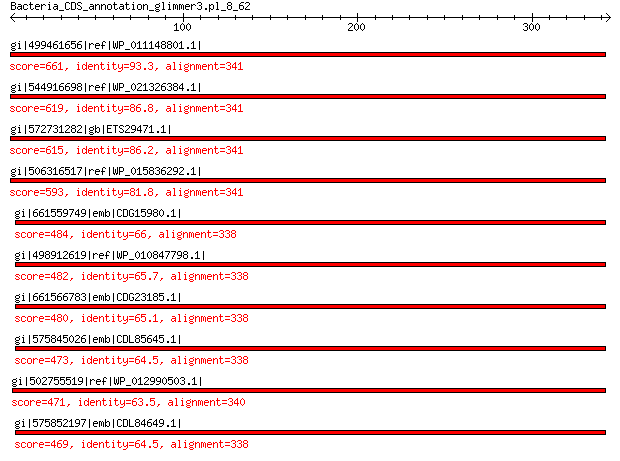

bitscore colors: <40, 40-50 , 50-80, 80-200, >200
 BLASTP 2.2.31+
Reference: Stephen F. Altschul, Thomas L. Madden, Alejandro A.
Schaffer, Jinghui Zhang, Zheng Zhang, Webb Miller, and David J.
Lipman (1997), "Gapped BLAST and PSI-BLAST: a new generation of
protein database search programs", Nucleic Acids Res. 25:3389-3402.
Reference for composition-based statistics: Alejandro A. Schaffer,
L. Aravind, Thomas L. Madden, Sergei Shavirin, John L. Spouge, Yuri
I. Wolf, Eugene V. Koonin, and Stephen F. Altschul (2001),
"Improving the accuracy of PSI-BLAST protein database searches with
composition-based statistics and other refinements", Nucleic Acids
Res. 29:2994-3005.
Database: All non-redundant GenBank CDS translations+PDB+SwissProt+PIR+PRF
excluding environmental samples from WGS projects
49,011,213 sequences; 17,563,301,199 total letters
Query= Bacteria_CDS_annotation_glimmer3.pl_8_62
Length=344
Score E
Sequences producing significant alignments: (Bits) Value
gi|499461656|ref|WP_011148801.1| UDP-N-acetylenolpyruvoylglucosa... 661 0.0
gi|544916698|ref|WP_021326384.1| UDP-N-acetylenolpyruvoylglucosa... 619 0.0
gi|572731282|gb|ETS29471.1| UDP-N-acetylmuramate dehydrogenase 615 0.0
gi|506316517|ref|WP_015836292.1| UDP-N-acetylenolpyruvoylglucosa... 593 0.0
gi|661559749|emb|CDG15980.1| UDP-N-acetylenolpyruvoylglucosamine... 484 4e-168
gi|498912619|ref|WP_010847798.1| UDP-N-acetylenolpyruvoylglucosa... 482 2e-167
gi|661566783|emb|CDG23185.1| UDP-N-acetylenolpyruvoylglucosamine... 480 2e-166
gi|575845026|emb|CDL85645.1| UDP-N-acetylenolpyruvoylglucosamine... 473 2e-163
gi|502755519|ref|WP_012990503.1| UDP-N-acetylenolpyruvoylglucosa... 471 4e-163
gi|575852197|emb|CDL84649.1| UDP-N-acetylenolpyruvoylglucosamine... 469 4e-162
>gi|499461656|ref|WP_011148801.1| UDP-N-acetylenolpyruvoylglucosamine reductase [Photorhabdus luminescens]
gi|37528550|ref|NP_931895.1| UDP-N-acetylenolpyruvoylglucosamine reductase [Photorhabdus luminescens
subsp. laumondii TTO1]
gi|47605815|sp|Q7MYE5.1|MURB_PHOLL RecName: Full=UDP-N-acetylenolpyruvoylglucosamine reductase;
AltName: Full=UDP-N-acetylmuramate dehydrogenase [Photorhabdus
luminescens subsp. laumondii TTO1]
gi|36787988|emb|CAE17105.1| UDP-N-acetylenolpyruvoylglucosamine reductase (UDP-N-acetylmuramate
dehydrogenase) [Photorhabdus luminescens subsp. laumondii
TTO1]
Length=341
Score = 661 bits (1706), Expect = 0.0, Method: Compositional matrix adjust.
Identities = 318/341 (93%), Positives = 326/341 (96%), Gaps = 0/341 (0%)
Query 1 MLSLKEFNTFGLSAYAKRLDIAESAESLLTLWQKAKSEKQPALLLGGGSNVLFTANFEGT 60
MLSLKEFNTFGLSAYAKRLDIAESAESLL LWQKAKSEKQP LLLGGGSNVLFT NFEGT
Sbjct 1 MLSLKEFNTFGLSAYAKRLDIAESAESLLALWQKAKSEKQPVLLLGGGSNVLFTTNFEGT 60
Query 61 VILNRIMGIQQRETDESWHLHVGAGENWHKLVCRSLKNQIYGLENLALIPGCVGAAPIQN 120
VILNRIMGIQQRETDESWHLHVGAGENWH+LVC SLKNQIYGLENLALIPGC GAAPIQN
Sbjct 61 VILNRIMGIQQRETDESWHLHVGAGENWHELVCHSLKNQIYGLENLALIPGCSGAAPIQN 120
Query 121 IGAYGIEFRDVCEYVDVLNLETGEKTRLSVGECQFGYRDSVFKNKYKTNHSIISVGLLLK 180
IGAYGIEFRDVCEYVDVLNLETGE+TRLSVGECQF YRDS+FK+KYK NHSIISVGLLLK
Sbjct 121 IGAYGIEFRDVCEYVDVLNLETGEQTRLSVGECQFRYRDSIFKHKYKANHSIISVGLLLK 180
Query 181 KNWQPILNYGDLTRFSKDNVTPQQIFDSICAMRTSKLPDPVITGNAGSFFKNPIVSEEVA 240
KNWQPILNYG+LTR SKDNVTPQQIFDS+CAMRTSKLPDP ITGNAGSFFKNPIVS EVA
Sbjct 181 KNWQPILNYGNLTRLSKDNVTPQQIFDSVCAMRTSKLPDPAITGNAGSFFKNPIVSAEVA 240
Query 241 AKIRENYPDSPQYPYMNGMFKLAAGWLIEHCNLKGYRIGGASVHLRQALVLINQENATGK 300
AKI+ENYPDSPQY Y NGMFKLAA WLIE CNLKGYRIGGASVHLRQALVLINQENATGK
Sbjct 241 AKIKENYPDSPQYSYTNGMFKLAAAWLIERCNLKGYRIGGASVHLRQALVLINQENATGK 300
Query 301 DVVSLAAYIRQQVISKFGVLLEPEVRFIGSKGEIDAVECIS 341
DVV LAAYIR+QVISKFGVLLEPEVRFIGSKGEIDAVECIS
Sbjct 301 DVVLLAAYIRRQVISKFGVLLEPEVRFIGSKGEIDAVECIS 341
>gi|544916698|ref|WP_021326384.1| UDP-N-acetylenolpyruvoylglucosamine reductase [Photorhabdus temperata]
gi|530707489|gb|EQB98438.1| UDP-N-acetylenolpyruvoylglucosamine reductase [Photorhabdus temperata
subsp. temperata M1021]
gi|550872908|gb|ERT12060.1| UDP-N-acetylenolpyruvoylglucosamine reductase [Photorhabdus temperata
J3]
Length=341
Score = 619 bits (1597), Expect = 0.0, Method: Compositional matrix adjust.
Identities = 296/341 (87%), Positives = 319/341 (94%), Gaps = 0/341 (0%)
Query 1 MLSLKEFNTFGLSAYAKRLDIAESAESLLTLWQKAKSEKQPALLLGGGSNVLFTANFEGT 60
MLSLKEFNTFGLSA+AK LDIAESAESLL LWQKAKS+KQP LLLGGGSNVLF +FEGT
Sbjct 1 MLSLKEFNTFGLSAHAKCLDIAESAESLLALWQKAKSQKQPVLLLGGGSNVLFAEDFEGT 60
Query 61 VILNRIMGIQQRETDESWHLHVGAGENWHKLVCRSLKNQIYGLENLALIPGCVGAAPIQN 120
VILNRIMGIQ +ETDESW LHVGAGENWH+LVC SLKNQIYGLENLALIPGC GAAPIQN
Sbjct 61 VILNRIMGIQYQETDESWRLHVGAGENWHELVCYSLKNQIYGLENLALIPGCAGAAPIQN 120
Query 121 IGAYGIEFRDVCEYVDVLNLETGEKTRLSVGECQFGYRDSVFKNKYKTNHSIISVGLLLK 180
IGAYGIEFRDVCEYVDVL+LETGE+TRLSV ECQFGYRDSVFK+KY+ ++ IISVGLLLK
Sbjct 121 IGAYGIEFRDVCEYVDVLSLETGEQTRLSVDECQFGYRDSVFKHKYQESYFIISVGLLLK 180
Query 181 KNWQPILNYGDLTRFSKDNVTPQQIFDSICAMRTSKLPDPVITGNAGSFFKNPIVSEEVA 240
KNWQP+L+YGDLTR S+ +VT QQIFDS+C MRTSKLPDP ITGNAGSFFKNPIVS EVA
Sbjct 181 KNWQPMLSYGDLTRLSRGSVTSQQIFDSVCTMRTSKLPDPAITGNAGSFFKNPIVSAEVA 240
Query 241 AKIRENYPDSPQYPYMNGMFKLAAGWLIEHCNLKGYRIGGASVHLRQALVLINQENATGK 300
KI+E+YPDSPQYP+ NGMFKLAAGWLIE CNLKGYRIGGASVHLRQALVLINQ NATG+
Sbjct 241 VKIKESYPDSPQYPHANGMFKLAAGWLIERCNLKGYRIGGASVHLRQALVLINQGNATGR 300
Query 301 DVVSLAAYIRQQVISKFGVLLEPEVRFIGSKGEIDAVECIS 341
D+++LAAYIRQQVISKFGVLLEPEVRFIGSKGEIDAVECIS
Sbjct 301 DIIALAAYIRQQVISKFGVLLEPEVRFIGSKGEIDAVECIS 341
>gi|572731282|gb|ETS29471.1| UDP-N-acetylmuramate dehydrogenase [Photorhabdus temperata subsp.
khanii NC19]
Length=341
Score = 615 bits (1587), Expect = 0.0, Method: Compositional matrix adjust.
Identities = 294/341 (86%), Positives = 319/341 (94%), Gaps = 0/341 (0%)
Query 1 MLSLKEFNTFGLSAYAKRLDIAESAESLLTLWQKAKSEKQPALLLGGGSNVLFTANFEGT 60
MLSLKEFNTFGLSA+AK LDIAESAESLL LWQKAKS+KQP LLLGGGSNVLFT +FEGT
Sbjct 1 MLSLKEFNTFGLSAHAKCLDIAESAESLLALWQKAKSQKQPVLLLGGGSNVLFTDDFEGT 60
Query 61 VILNRIMGIQQRETDESWHLHVGAGENWHKLVCRSLKNQIYGLENLALIPGCVGAAPIQN 120
VILNRIMGIQ +ETDESW LHVGAGENWH+LVC SLKNQI+GLENLALIPGC GAAPIQN
Sbjct 61 VILNRIMGIQYQETDESWRLHVGAGENWHELVCYSLKNQIHGLENLALIPGCAGAAPIQN 120
Query 121 IGAYGIEFRDVCEYVDVLNLETGEKTRLSVGECQFGYRDSVFKNKYKTNHSIISVGLLLK 180
IGAYGIEFRDVC+YVDVLNLETGE+TRLSV ECQFGYRDSVFK+KY+ ++ II+VGLLLK
Sbjct 121 IGAYGIEFRDVCDYVDVLNLETGEQTRLSVDECQFGYRDSVFKHKYQESYFIIAVGLLLK 180
Query 181 KNWQPILNYGDLTRFSKDNVTPQQIFDSICAMRTSKLPDPVITGNAGSFFKNPIVSEEVA 240
KNWQP+L+YGDLTR S+ +VTPQQIFDS+C MR SKLP+P ITGNAGSFFKNPIVS EVA
Sbjct 181 KNWQPMLSYGDLTRLSRSSVTPQQIFDSVCTMRASKLPNPAITGNAGSFFKNPIVSAEVA 240
Query 241 AKIRENYPDSPQYPYMNGMFKLAAGWLIEHCNLKGYRIGGASVHLRQALVLINQENATGK 300
KI+E+YPDSPQY + +GMFKLAAGWLIE CNLKGYRIGGASVHLRQALVLINQ NATGK
Sbjct 241 VKIKESYPDSPQYSHASGMFKLAAGWLIERCNLKGYRIGGASVHLRQALVLINQGNATGK 300
Query 301 DVVSLAAYIRQQVISKFGVLLEPEVRFIGSKGEIDAVECIS 341
DV++LAAYIRQQVISKFGVLLEPEVRFIGSKGEIDAVECIS
Sbjct 301 DVIALAAYIRQQVISKFGVLLEPEVRFIGSKGEIDAVECIS 341
>gi|506316517|ref|WP_015836292.1| UDP-N-acetylenolpyruvoylglucosamine reductase [Photorhabdus asymbiotica]
gi|253991698|ref|YP_003043054.1| udp-n-acetylenolpyruvoylglucosamine reductase [Photorhabdus asymbiotica]
gi|253783148|emb|CAQ86313.1| udp-n-acetylenolpyruvoylglucosamine reductase (ec 1.1.1.158)
[Photorhabdus asymbiotica]
Length=341
Score = 593 bits (1528), Expect = 0.0, Method: Compositional matrix adjust.
Identities = 279/341 (82%), Positives = 307/341 (90%), Gaps = 0/341 (0%)
Query 1 MLSLKEFNTFGLSAYAKRLDIAESAESLLTLWQKAKSEKQPALLLGGGSNVLFTANFEGT 60
MLSLK+FN FGLSA+AK LDIAES ESLL LWQ+AK +KQP LLLGGGSNVLFT +FEGT
Sbjct 1 MLSLKKFNAFGLSAHAKHLDIAESTESLLALWQEAKKQKQPVLLLGGGSNVLFTEDFEGT 60
Query 61 VILNRIMGIQQRETDESWHLHVGAGENWHKLVCRSLKNQIYGLENLALIPGCVGAAPIQN 120
VILNRIMGIQ +ETD SW LHVGAGENWH LVC SL+N+IYGLENLALIPGC GAAPIQN
Sbjct 61 VILNRIMGIQCQETDNSWRLHVGAGENWHDLVCYSLENRIYGLENLALIPGCAGAAPIQN 120
Query 121 IGAYGIEFRDVCEYVDVLNLETGEKTRLSVGECQFGYRDSVFKNKYKTNHSIISVGLLLK 180
IGAYGIEFRDVCEYVD+LNLE GE+ RLS ECQFGYRDSVFK+KY+ N+S+ SVGLLLK
Sbjct 121 IGAYGIEFRDVCEYVDILNLENGERMRLSADECQFGYRDSVFKHKYRENYSVTSVGLLLK 180
Query 181 KNWQPILNYGDLTRFSKDNVTPQQIFDSICAMRTSKLPDPVITGNAGSFFKNPIVSEEVA 240
KNWQPILNYGDLT+ SK +VTP QIF +CAMRTSKLP+P I GNAGSFFKNPIVS E+A
Sbjct 181 KNWQPILNYGDLTKLSKGSVTPHQIFSLVCAMRTSKLPNPAIAGNAGSFFKNPIVSAEIA 240
Query 241 AKIRENYPDSPQYPYMNGMFKLAAGWLIEHCNLKGYRIGGASVHLRQALVLINQENATGK 300
A I+ENYPDSPQY +++G FKLAAGWLIE CNLKGYRIGGA+VH +QALVLINQENATGK
Sbjct 241 ATIKENYPDSPQYSHIDGTFKLAAGWLIEQCNLKGYRIGGAAVHFKQALVLINQENATGK 300
Query 301 DVVSLAAYIRQQVISKFGVLLEPEVRFIGSKGEIDAVECIS 341
DV++LA YIRQQVI KFGVLLEPEVRFIG+KGEIDAVECIS
Sbjct 301 DVIALATYIRQQVIRKFGVLLEPEVRFIGTKGEIDAVECIS 341
>gi|661559749|emb|CDG15980.1| UDP-N-acetylenolpyruvoylglucosamine reductase [Xenorhabdus doucetiae]
Length=346
Score = 484 bits (1246), Expect = 4e-168, Method: Compositional matrix adjust.
Identities = 223/338 (66%), Positives = 272/338 (80%), Gaps = 0/338 (0%)
Query 4 LKEFNTFGLSAYAKRLDIAESAESLLTLWQKAKSEKQPALLLGGGSNVLFTANFEGTVIL 63
LK FNTFG+SA A + IA S ESLLTLWQ+A + P LLLGGGSNVLFT NF+GTVIL
Sbjct 9 LKAFNTFGISACADHIGIATSIESLLTLWQEAMEKDHPILLLGGGSNVLFTENFKGTVIL 68
Query 64 NRIMGIQQRETDESWHLHVGAGENWHKLVCRSLKNQIYGLENLALIPGCVGAAPIQNIGA 123
NRI+GI +E+D +WH+H GAGENWH+L+ QIYGLENLALIPG VG+APIQNIGA
Sbjct 69 NRILGINIQESDTAWHVHAGAGENWHELITYLFNQQIYGLENLALIPGNVGSAPIQNIGA 128
Query 124 YGIEFRDVCEYVDVLNLETGEKTRLSVGECQFGYRDSVFKNKYKTNHSIISVGLLLKKNW 183
YGIEF+ VCEYVD + L+TG RL+ ECQF YRDS+FK++YK ++ I +VGL L K W
Sbjct 129 YGIEFKQVCEYVDFVELKTGNSMRLTANECQFAYRDSIFKHQYKDDYVITAVGLRLNKKW 188
Query 184 QPILNYGDLTRFSKDNVTPQQIFDSICAMRTSKLPDPVITGNAGSFFKNPIVSEEVAAKI 243
+PIL YG L +FS++ VTP+QIFD++C MR +KLPDP + GNAGSFFKNPIVS E+A +I
Sbjct 189 EPILTYGALAQFSREKVTPKQIFDTVCEMRQNKLPDPALMGNAGSFFKNPIVSIELAYRI 248
Query 244 RENYPDSPQYPYMNGMFKLAAGWLIEHCNLKGYRIGGASVHLRQALVLINQENATGKDVV 303
+ YPD PQYP+ K+AAGWLIE C LKGY IGGA+VH +QALVLIN++NATG+D++
Sbjct 249 KSEYPDCPQYPHDEHNIKIAAGWLIEQCQLKGYVIGGAAVHTKQALVLINKDNATGQDII 308
Query 304 SLAAYIRQQVISKFGVLLEPEVRFIGSKGEIDAVECIS 341
+LAAY+R +V KF + LEPEVRFIGS+GEIDAVECIS
Sbjct 309 ALAAYVRNKVAEKFNIFLEPEVRFIGSEGEIDAVECIS 346
>gi|498912619|ref|WP_010847798.1| UDP-N-acetylenolpyruvoylglucosamine reductase [Xenorhabdus nematophila]
gi|300721347|ref|YP_003710618.1| UDP-N-acetylenolpyruvoylglucosamine reductase, FAD-binding [Xenorhabdus
nematophila ATCC 19061]
gi|297627835|emb|CBJ88370.1| UDP-N-acetylenolpyruvoylglucosamine reductase, FAD-binding [Xenorhabdus
nematophila ATCC 19061]
gi|484362485|emb|CCW30659.1| UDP-N-acetylenolpyruvoylglucosamine reductase [Xenorhabdus nematophila
F1]
Length=346
Score = 482 bits (1241), Expect = 2e-167, Method: Compositional matrix adjust.
Identities = 222/338 (66%), Positives = 270/338 (80%), Gaps = 0/338 (0%)
Query 4 LKEFNTFGLSAYAKRLDIAESAESLLTLWQKAKSEKQPALLLGGGSNVLFTANFEGTVIL 63
LK FNTF + AYA + A + ESLL+LWQ+A+ + P LLLGGGSNVLFT NF+GTVIL
Sbjct 9 LKAFNTFSILAYADHIVAATTIESLLSLWQEAQRKNHPILLLGGGSNVLFTENFKGTVIL 68
Query 64 NRIMGIQQRETDESWHLHVGAGENWHKLVCRSLKNQIYGLENLALIPGCVGAAPIQNIGA 123
NRI+GI +E+D +WH+HVGAGENWH L+ L QIYGLENLALIPG VG+APIQNIGA
Sbjct 69 NRILGINIQESDTAWHIHVGAGENWHNLIISLLNQQIYGLENLALIPGNVGSAPIQNIGA 128
Query 124 YGIEFRDVCEYVDVLNLETGEKTRLSVGECQFGYRDSVFKNKYKTNHSIISVGLLLKKNW 183
YGIEF+ VCEYVD + LE+G RL ECQF YRDS+FK++YK ++I +VGL L K W
Sbjct 129 YGIEFKHVCEYVDFIELESGNSIRLMTDECQFAYRDSIFKHQYKDGYAITAVGLCLNKAW 188
Query 184 QPILNYGDLTRFSKDNVTPQQIFDSICAMRTSKLPDPVITGNAGSFFKNPIVSEEVAAKI 243
+PIL YG LT+ S+ +VTP+QIF S+C MR SKLPDP ITGNAGSFFKNPI+S E+A KI
Sbjct 189 EPILTYGSLTQLSRKDVTPEQIFHSVCEMRQSKLPDPAITGNAGSFFKNPIISPELAQKI 248
Query 244 RENYPDSPQYPYMNGMFKLAAGWLIEHCNLKGYRIGGASVHLRQALVLINQENATGKDVV 303
+ YP PQY + K+AAGWLI+ C+LKGY IGGA+VH +QALVL+N+ NATGKDV+
Sbjct 249 KSQYPSCPQYHHNENSVKIAAGWLIDQCHLKGYSIGGAAVHTQQALVLVNKGNATGKDVI 308
Query 304 SLAAYIRQQVISKFGVLLEPEVRFIGSKGEIDAVECIS 341
+LAAY+R +V+ KF + LEPEVRFIGS+GEIDAVECIS
Sbjct 309 ALAAYVRSKVVEKFNIFLEPEVRFIGSQGEIDAVECIS 346
>gi|661566783|emb|CDG23185.1| UDP-N-acetylenolpyruvoylglucosamine reductase [Xenorhabdus poinarii
G6]
Length=346
Score = 480 bits (1235), Expect = 2e-166, Method: Compositional matrix adjust.
Identities = 220/338 (65%), Positives = 273/338 (81%), Gaps = 0/338 (0%)
Query 4 LKEFNTFGLSAYAKRLDIAESAESLLTLWQKAKSEKQPALLLGGGSNVLFTANFEGTVIL 63
LK FNTFG+SA A+ +DIA S ESLL LWQ+A + P LLLGGGSNVLFT NF+GTVIL
Sbjct 9 LKTFNTFGISACAEHIDIANSVESLLALWQRAIKKHHPILLLGGGSNVLFTENFKGTVIL 68
Query 64 NRIMGIQQRETDESWHLHVGAGENWHKLVCRSLKNQIYGLENLALIPGCVGAAPIQNIGA 123
NRI+G+ ++TD W++HVGAGENWH+L+ K QIYGLENLALIPG VG+APIQNIGA
Sbjct 69 NRILGVNIQQTDIEWYIHVGAGENWHELITYLFKQQIYGLENLALIPGNVGSAPIQNIGA 128
Query 124 YGIEFRDVCEYVDVLNLETGEKTRLSVGECQFGYRDSVFKNKYKTNHSIISVGLLLKKNW 183
YG+EF+DVCEYVD + L++G RL+ ECQF YRDS+FK++YK ++I +VGL L K W
Sbjct 129 YGVEFKDVCEYVDFVELKSGNLIRLTAKECQFAYRDSIFKHQYKNGYAITAVGLRLSKQW 188
Query 184 QPILNYGDLTRFSKDNVTPQQIFDSICAMRTSKLPDPVITGNAGSFFKNPIVSEEVAAKI 243
+PIL YG L + S++N+TP+QIFD++C MR +KLPDPV+ GNAGSFFKNPIVS E+A KI
Sbjct 189 KPILTYGALAQLSQENITPKQIFDTVCEMRRNKLPDPVLMGNAGSFFKNPIVSIELACKI 248
Query 244 RENYPDSPQYPYMNGMFKLAAGWLIEHCNLKGYRIGGASVHLRQALVLINQENATGKDVV 303
+ YP+ PQYP+ K+AAGWLIE C LKGY IGGA++H +QALVLIN+ +ATG+DV+
Sbjct 249 KSEYPNCPQYPHNEKSIKIAAGWLIEQCQLKGYSIGGAAIHTKQALVLINKGHATGQDVI 308
Query 304 SLAAYIRQQVISKFGVLLEPEVRFIGSKGEIDAVECIS 341
LAAY+ +V KF + LEPEVRFIGS+GEIDAVECIS
Sbjct 309 DLAAYVYSKVAEKFNIFLEPEVRFIGSEGEIDAVECIS 346
>gi|575845026|emb|CDL85645.1| UDP-N-acetylenolpyruvoylglucosamine reductase [Xenorhabdus szentirmaii
DSM 16338]
Length=346
Score = 473 bits (1216), Expect = 2e-163, Method: Compositional matrix adjust.
Identities = 218/338 (64%), Positives = 271/338 (80%), Gaps = 0/338 (0%)
Query 4 LKEFNTFGLSAYAKRLDIAESAESLLTLWQKAKSEKQPALLLGGGSNVLFTANFEGTVIL 63
LK FNTF + AYA+ + IA S ESLL+LWQ AK + P LLLGGGSN+LFT NF+GTVIL
Sbjct 9 LKAFNTFNIPAYAEYIGIATSIESLLSLWQAAKEKTHPILLLGGGSNILFTENFKGTVIL 68
Query 64 NRIMGIQQRETDESWHLHVGAGENWHKLVCRSLKNQIYGLENLALIPGCVGAAPIQNIGA 123
NRI+GI+ +E+D +WH+HVGAGENWH+L+ L QIYGLENLALIPG VG+APIQNIGA
Sbjct 69 NRILGIEIQESDTAWHIHVGAGENWHQLIISLLNQQIYGLENLALIPGNVGSAPIQNIGA 128
Query 124 YGIEFRDVCEYVDVLNLETGEKTRLSVGECQFGYRDSVFKNKYKTNHSIISVGLLLKKNW 183
YG+EF+DVCEYVD++ L+TG RL CQFGYRDS+FK++YK ++II+VGL L K W
Sbjct 129 YGVEFKDVCEYVDLIELKTGNSIRLMANICQFGYRDSIFKHQYKDGYAIIAVGLRLNKIW 188
Query 184 QPILNYGDLTRFSKDNVTPQQIFDSICAMRTSKLPDPVITGNAGSFFKNPIVSEEVAAKI 243
+P L YG L +FS+++VTP+QIF+ +C +R SKLPDP I GNAGSFFKNPI+S +A KI
Sbjct 189 EPTLTYGGLAKFSREDVTPEQIFNMVCDIRQSKLPDPAIMGNAGSFFKNPIISAALAQKI 248
Query 244 RENYPDSPQYPYMNGMFKLAAGWLIEHCNLKGYRIGGASVHLRQALVLINQENATGKDVV 303
+ YPD PQY K+AAGWLIE C+LKGY +G A+VH QALVLIN+ +ATG+D++
Sbjct 249 KFTYPDCPQYCVNEHSMKIAAGWLIEQCDLKGYSVGDAAVHTNQALVLINKGSATGQDII 308
Query 304 SLAAYIRQQVISKFGVLLEPEVRFIGSKGEIDAVECIS 341
+LAAY+R +V KF + LEPEVRFIGS+GEIDAVECIS
Sbjct 309 ALAAYVRNKVAEKFNIHLEPEVRFIGSEGEIDAVECIS 346
>gi|502755519|ref|WP_012990503.1| UDP-N-acetylenolpyruvoylglucosamine reductase [Xenorhabdus bovienii]
gi|290477202|ref|YP_003470119.1| UDP-N-acetylenolpyruvoylglucosamine reductase, FAD-binding [Xenorhabdus
bovienii SS-2004]
gi|289176552|emb|CBJ83361.1| UDP-N-acetylenolpyruvoylglucosamine reductase, FAD-binding [Xenorhabdus
bovienii SS-2004]
gi|666603378|emb|CDH29105.1| UDP-N-acetylenolpyruvoylglucosamine reductase,FAD-binding [Xenorhabdus
bovienii str. Jollieti]
Length=346
Score = 471 bits (1213), Expect = 4e-163, Method: Compositional matrix adjust.
Identities = 216/340 (64%), Positives = 275/340 (81%), Gaps = 0/340 (0%)
Query 2 LSLKEFNTFGLSAYAKRLDIAESAESLLTLWQKAKSEKQPALLLGGGSNVLFTANFEGTV 61
+ LKEFNTFG+SA A + S SLL+ WQ+A+ ++ P LLLGGGSNVLFT NF+GTV
Sbjct 7 IQLKEFNTFGISACADHISTVTSVASLLSAWQEAEEKEHPILLLGGGSNVLFTENFKGTV 66
Query 62 ILNRIMGIQQRETDESWHLHVGAGENWHKLVCRSLKNQIYGLENLALIPGCVGAAPIQNI 121
ILNRI+G+ +E+D +WH+HVGAGENWH+L+ R L QIYGLENLALIPG VG+APIQNI
Sbjct 67 ILNRILGVDIQESDTAWHIHVGAGENWHQLIVRLLHQQIYGLENLALIPGSVGSAPIQNI 126
Query 122 GAYGIEFRDVCEYVDVLNLETGEKTRLSVGECQFGYRDSVFKNKYKTNHSIISVGLLLKK 181
GAYGIEF+ VCEYVD++ L+TG+ L ECQF YRDS+FK++YK ++I +VGL L K
Sbjct 127 GAYGIEFKHVCEYVDLIELKTGKLIHLMANECQFAYRDSIFKHQYKDGYAITAVGLQLSK 186
Query 182 NWQPILNYGDLTRFSKDNVTPQQIFDSICAMRTSKLPDPVITGNAGSFFKNPIVSEEVAA 241
W+PIL YG LT+FS ++VTP++IF+++C MR SKLPDPVI GNAGSFFKNPIV E+A
Sbjct 187 VWKPILTYGGLTQFSSESVTPERIFNAVCEMRQSKLPDPVIIGNAGSFFKNPIVLIELAQ 246
Query 242 KIRENYPDSPQYPYMNGMFKLAAGWLIEHCNLKGYRIGGASVHLRQALVLINQENATGKD 301
KI+ +YP+ PQY + K+AAGWLI+ C+LKGY IG A++H++QALVLIN+ NATG+D
Sbjct 247 KIKFDYPECPQYHHNEHNVKIAAGWLIDQCHLKGYCIGDAAIHMKQALVLINKGNATGQD 306
Query 302 VVSLAAYIRQQVISKFGVLLEPEVRFIGSKGEIDAVECIS 341
+ +LA Y+R++V KF + LEPEVRFIGS+GEIDAVECIS
Sbjct 307 ITALATYVRKKVAEKFNIFLEPEVRFIGSEGEIDAVECIS 346
>gi|575852197|emb|CDL84649.1| UDP-N-acetylenolpyruvoylglucosamine reductase [Xenorhabdus cabanillasii
JM26]
Length=346
Score = 469 bits (1207), Expect = 4e-162, Method: Compositional matrix adjust.
Identities = 218/338 (64%), Positives = 273/338 (81%), Gaps = 0/338 (0%)
Query 4 LKEFNTFGLSAYAKRLDIAESAESLLTLWQKAKSEKQPALLLGGGSNVLFTANFEGTVIL 63
LK FNTFG+S A+R+ A S ESLL+LWQ+A+ P L+LGGGSNVLFT NF+GTVIL
Sbjct 9 LKVFNTFGISTNAERICTATSTESLLSLWQEAEKNGHPVLILGGGSNVLFTENFKGTVIL 68
Query 64 NRIMGIQQRETDESWHLHVGAGENWHKLVCRSLKNQIYGLENLALIPGCVGAAPIQNIGA 123
NRI+GI+ + +D +WH+HVGAGENWH+L+ L QI+GLENLALIPG VG+APIQNIGA
Sbjct 69 NRILGIEIQGSDIAWHIHVGAGENWHELIKYLLNRQIFGLENLALIPGNVGSAPIQNIGA 128
Query 124 YGIEFRDVCEYVDVLNLETGEKTRLSVGECQFGYRDSVFKNKYKTNHSIISVGLLLKKNW 183
YGIEF+ VCEYVD++ L+TG++ RL ECQF YRDS+FK++Y+ ++IISVGL L K W
Sbjct 129 YGIEFKQVCEYVDLVELKTGKQIRLMERECQFSYRDSIFKHQYREGYAIISVGLRLNKTW 188
Query 184 QPILNYGDLTRFSKDNVTPQQIFDSICAMRTSKLPDPVITGNAGSFFKNPIVSEEVAAKI 243
QPIL YG L +F +VTP+QIF ++C MR SKLPDP + GNAGSFFKNP++ E+A KI
Sbjct 189 QPILTYGGLNQFLGGDVTPEQIFHAVCEMRQSKLPDPAVIGNAGSFFKNPVIPIELAQKI 248
Query 244 RENYPDSPQYPYMNGMFKLAAGWLIEHCNLKGYRIGGASVHLRQALVLINQENATGKDVV 303
+ YP+ PQY + K+AAGWLI+ C+LKGYR+G A+VH++QALVLINQ NAT +DV+
Sbjct 249 KSKYPECPQYHHNEHSVKIAAGWLIDQCHLKGYRVGDAAVHMKQALVLINQGNATAQDVI 308
Query 304 SLAAYIRQQVISKFGVLLEPEVRFIGSKGEIDAVECIS 341
+LAAY+R+QV KF + LEPEVRFIGSKGEIDAVECIS
Sbjct 309 ALAAYVRKQVAKKFNISLEPEVRFIGSKGEIDAVECIS 346
Lambda K H a alpha
0.319 0.137 0.410 0.792 4.96
Gapped
Lambda K H a alpha sigma
0.267 0.0410 0.140 1.90 42.6 43.6
Effective search space used: 2020689768300